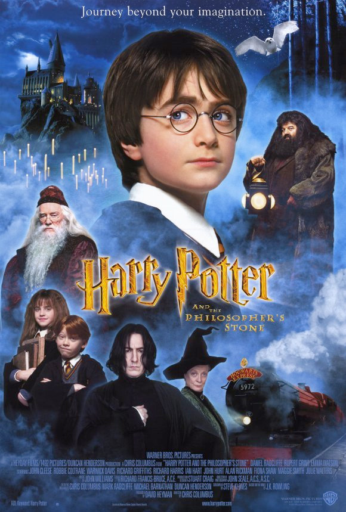

|
Филмите Хари Потър |
|
Филмите Хари Потър |
Магьосниците Албус Дъмбълдор и Минерва Макгонъгол се срещат на улица „Привит Драйв“ номер четири, Литъл Уингинг, графство Съри, подтикнати от последните събития в магическия свят. Лорд Волдемор, вероятно най-силният и страховит тъмен магьосник, живял някога, е бил победен. Лили и Джеймс Потър са станали последните му две жертви. Въпреки всичко техният невръстен син Хари по някакъв начин е оцелял след убийственото проклятие на Волдемор (по-късно става ясно, че е използвал проклятието Авада Кедавра) и белегът с форма на светкавица на челото му е единственият видим ефект от проклятието. Хари незабавно се превръща в легенда сред магьосниците и става известен като „момчето, което оживя“. Хари е оставен да живее заедно с Петуния, сестрата на майка му, нейния съпруг Върнън и все още невръстното им дете Дъдли. Заради презрението си към магьосническия свят, лелята и чичото на Хари решават да скрият от него истината за неговите магически способности и му казват, че родителите му са загинали при автомобилна катастрофа. Семейство Дърсли се отнася с пренебрежение към момчето, което е принудено да спи в килера под стълбището. По-късно момчето тръгва към Хогуортс от перон 9¾ на гара Кингс Крос, Лондон. Там се запознава с Рон Уизли, който произхожда от бедно, но много сплотено семейство, и Хърмаяни Грейнджър – момиче, родено в семейство на мъгъли, което има досадния навик да знае всичко. Веднага след пристигането си в училището всички нови ученици биват разпределени в някой от четирите домове. Всеки дом има характерни черти: Слидерин събира амбициозните и хитри магьосници, които биха направили всичко, за да постигнат това което искат; в Рейвънклоу отиват интелигентните и разумни ученици; Грифиндор е за дръзките и смели магьосници; Хафълпаф се характеризира със справедливост, честност и усърден труд. Разпределянето става последством разпределителна шапка, която всеки от първокурсниците си слага и тя решава в кой дом да отиде. По време на разпределянето на Хари шапката много се колебае дали да не го прати в Слидерин, но впечатленията на момчето от този дом не са добри, затова то през цялото време си мисли за Грифиндор и именно там го праща накрая шапката. В Грифиндор са разпределени също и Рон и Хърмаяни, докато Драко Малфой, който вече не крие презрението си към Хари и неговите приятели, е разпределен в Слидерин. |
 |
 |
Триглаво куче, кръстено от Хагрид Пухчо, охранява отвор в пода на забранения коридор в училището. Тримата герои дълго обсъждат какво може да се пази там и в крайна сметка решават, че там се намира легендарният Философски камък, изработен от Никола Фламел. Смята се, че с този камък човек може да произведе еликсир на живота, който да му донесе безсмъртие, затова Волдемор го иска толкова много. Тримата герои смятат, че кражбата на камъка предстои в скоро време и решават, че е по-добре те да се доберат първи до него.
След като успяват да преминат покрай Пухчо, им се налага да преминат през още няколко препятствия, защитаващи камъка. В крайна
сметка Хари успява да се добере до най-вътрешната стая, където за
своя изненада открива професор Куиръл. Оказва се, че Куиръл през цялото време е използван от Лорд Волдемор, който
със силно намалена сила се нуждае от Философския камък, за да се върне към своето могъщество. Той обаче не успява да вземе
камъка и след като е победен от малкия магьосник и Волдемор напуска неговото тяло, Куиръл умира. |
Снимките на „Стаята на тайните“ започват на 19 ноември 2001 г. в Англия – само три дни след премиерата на „Философският камък“. В главните роли отново са Даниел Радклиф (Хари), Рупърт Гринт (Рон) и Ема Уотсън (Хърмаяни). Новите попълнения са: известният актьор, сценарист и режисьор Кенет Брана, който играе новия преподавател по защита срещу Черните изкуства Гилдрой Локхарт, Джейсън Айзъкс, в ролята на студения и отмъстителен Малфой-баща, Бони Райт – сестрата на Рон, която изиграва съществена роля в събитията, разтърсващи магическото училище, както и Мириам Марголис, която играе преподавателката професор Спраут. Хари, Рон и Хърмаяни се завръщат за втората си година в училището за магия и вълшебство „Хогуортс“, която се оказва по-трудна от предната. Стаята на тайните е отворена, а последствията от това са вкаменени ученици и призраци от освободеното чудовище. Хари трябва да се изправи срещу твърденията, че е наследник на Салазар Слидерин (основател на дом Слидерин), след като научава, че говори змийски език, подобно на него. Малкият магьосник открива мистериозен дневник, който го вкарва в капана на Стаята на тайните, но също така разкрива и част от миналото на младия Волдемор. |
 |
 |
Преди да замине за третата си година в „Хогуортс“, Хари Потър е подложен на изпитанието да изтърпи леля си Мардж за цяла седмица. Момчето обаче не успява да сдържи емоциите си и прави магия, след което бяга от улица „Привит Драйв“ и стига до Лондон с автобуса „Среднощният Рицар“. Въпреки че извършва магия извън училището, от Министерството на магията не го наказват, като по-късно разбира, че това може би се дължи на страха от избягалия затворник Сириус Блек. Всички са притеснени, че той иска да убие Хари. Момчето се връща в училище, но е доста обезпокоено от честите появи на странно куче, представляващо поличба за скорошна смърт. Един ден случайно научава, че Сириус Блек е бил приятел на родителите му и ги е предал, ставайки причина за смъртта им. Оттогава Хари не е сигурен какво да прави, и воден от желанието си за отмъщение, се забърква в неприятни и дори опасни ситуации. Но дали всъщност Затворника от Азкабан има вина за престъпленията и е станал част от по-голям и злокобен план на Лорд Волдемор? Дали злите поличби ще се сбъднат? Ще се върне ли слугата при господаря си, за да му помогне да вдигне глава отново? |

|
Книгата започва със Световното първенство по куидич – хиляди любители на този спорт идват на мача Ирландия срещу България. Победител е Ирландия, въпреки че за България играе най-добрият търсач в света – Виктор Крум. След световното по куидич учениците от „Хогуортс“, сред които и Хари, Рон и Хърмаяни, се връщат в училище. Тази година училището е домакин на Тримагическия турнир. В него участват Виктор Крум от „Дурмщранг“, Фльор Делакор от академия „Бобатон“ и Седрик Дигъри от „Хогуортс“. Огненият Бокал е този, който определя участниците, но има двама, които са достойни за турнира от „Хогуортс“ – Седрик и Хари. В турнира има 3 изпитания – Змейове, Езеряни и Лабиринт. В края на турнира Седрик е убит от слугата на Волдемор Опаш по време на третото изпитание, а Хари се изправя срещу Черния Лорд. Младият магьосник успява да го победи с помощта на майка си и баща си, но Волдемор успява да възвърне мощта си. Хари се спасява благодарение на летекод (който го е завел в Литъл Уингинг), като се магипортира заедно с тялото на мъртвия Седрик. Корнелиус Фъдж и Министерството на магията не искат да всяват паника и затова заявяват, че Волдемор не се е завърнал. Така за Хари и професор Дъмбълдор, който му е повярвал, предстои една тежка година... |
 |
В началото на книгата Хари Потър и братовчед му Дъдли Дърсли са нападнати от диментори, като момчето успява да ги отблъсне със сложно заклинание. На
невръстните магьосници е забранено правенето на магии извън училището за магия и вълшебство „Хогуортс“, затова героят е изправен пред изключване и дори
пред нещо по-страшно – да загуби магията си завинаги. Впоследствие Хари е оправдан по всички обвинения. В самия край на книгата Хари получава видение, че кръстникът му Сириус Блек е отвлечен и измъчван от Волдемор. Главният герой повежда членовете на ВОДА – тайна защитна организация, създадена от Хари, към Отдел Мистерии (известно още като войнството да Дъмбълдор). Там той открива тайнственото пророчество, направено от Сибила Трелони за него и Черния лорд. В започналата битка със смъртожадните се включва и Орденът на феникса, тайна организация от магьосници, която цели да издири и унищожи Волдемор, начело с Албус Дъмбълдор. В битката загива Сириус Блек, убит от своята братовчедка, която е смъртожадна също. Министерството най-накрая признава официално, че Волдемор се е завърнал. Хари разбира от професор Дъмбълдор защо Волдемор се е опитал да го убие преди четиринадесет години. |
 |
 |
Вечерта, в която историята започва, Сивиръс Снейп дава „неразрушима клетва“ на майката на Драко Малфой Нарциса, която цели да предпазва Драко и да му
помага в мисиите му, които не са ясни за момента. Свидетел е Белатрикс Лестранж – сестрата на Нарциса. |
 |
 |
В серия от частни уроци, Дъмбълдор показва редица спомени на Хари, които хвърлят светлина върху миналото на Волдемор. Когато виждат последния
спомен, притежание на Слъгхорн и осигурен от Хари посредством Феликс Феликсис, Дъмбълдор предполага, че Волдемор е разделил душата си на седем части
(хоркрукси), като скрива шест от тях. |
 |
 |
Лорд Волдемор и смъртожадните планират да устроят засада на Хари, когато той напуска дома на семейство Дърсли, придружен от Ордена на феникса. За да объркат Лорда, шестима от Ордена изпиват многоликова отвара и стават седем Потъровци (с истинския). По някое време в гонитбата Волдемор разбира кой е истинският Хари и прави заклинание на него, но се случва нещо странно. В битката е убита совата на Хари – Хедуиг, а Джордж Уизли губи ухото си. Останалите пристигат в дома на семейство Уизл). Там Хари остава за сватбата на Бил Уизли и Фльор Делакор. Вечерта, в която момчето има рожден ден, се появява министърът на магията, за да връчи на Рон, Хърмаяни и Хари това, което е завещал Дъмбълдор на всеки един от тях, съответно Загасителя на Рон, книгата „Приказки на Барда Бийдъл“ (от която разбират за трите дарове на смъртта, впоследствие потвърдени и от бащата на Луна Лавгууд) на Хърмаяни, а на Хари – златния снич, който той улавя в първия си куидичен мач. На сватбата на Бил и Фльор е също и Елфиъс Дож, който малко преди това е написал статия за трагичната съдба на Дъмбълдор в ранните му години, която по-късно е оплюта и опровергана от Рита Скийтър в книгата ѝ „Животът и лъжите на Албус Дъмбълдор“. Точно покрай това започва спор между Дож и лелята на Рон, Мюриъл, по време на който Хари разбира, че Батилда Багшот, авторка на „История на магията“ и приятелка на Дъмбълдор, е живяла в Годрикс Холоу, но че също така и Дъмбълдор е живял там. По средата на сватбеното тържество се появява покровителят на Кингзли Шакълболт, който съобщава, че министерството е паднало, Руфъс Скримджър е мъртъв, а смъртожадните идват. |
 |
Малко след съобщението от Шакълболт пристигат
и смъртожадните, но Хари, Хърмаяни и Рон успяват да се магипортират, където биват проследени от смъртожадни. Така те започват
последното си пътуване с цел да изпълнят заръката на Дъмбълдор да унищожат останалите хоркрукси на Волдемор |